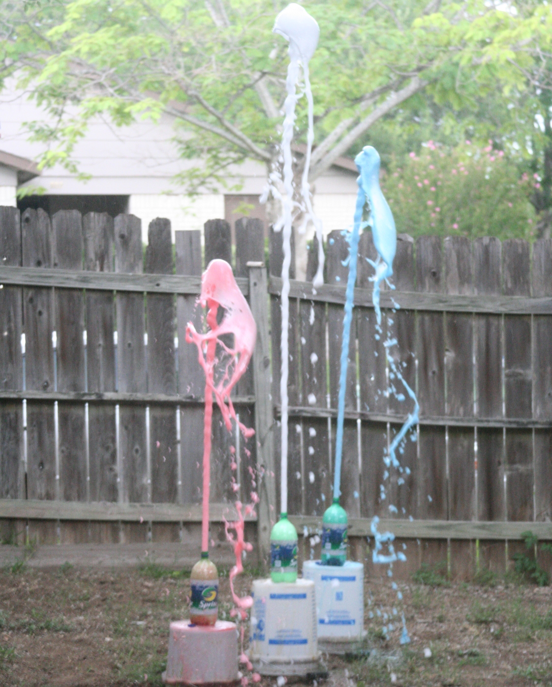

Async sequences and algorithms
building usable async primitives
Created by Kirk Shoop / @kirkshoop
Demo
Idea credit: David Sankel
Gui: OpenFrameworks
void step_one_setup(ofApp* app)
{
auto orbit_points = app->orbitPointsFromTimeInPeriod(
app->timeInPeriodFromMilliseconds(
app->updates.
milliseconds()));
auto location_points = app->mouse.
moves().
map(ofApp::pointFromMouse);
location_points.
combine_latest(std::plus<>(), orbit_points).
subscribe(
[=](ofPoint c){
// update the point that the draw() call will use
app->center = c;
});
}
Orbit from Time
rxcpp::observable<float> ofApp::timeInPeriodFromMilliseconds( rxcpp::observable<unsigned long long> timeInMilliseconds){ return timeInMilliseconds. map( [this](unsigned long long tick){ // map the tick into the range 0.0-1.0 return ofMap(tick % int(orbit_period * 1000), 0, int(orbit_period * 1000), 0.0, 1.0); }); } rxcpp::observable<ofPoint> ofApp::orbitPointsFromTimeInPeriod( rxcpp::observable<float> timeInPeriod){ return timeInPeriod. map( [this](float t){ // map the time value to a point on a circle return ofPoint(orbit_radius * std::cos(t * 2 * 3.14), orbit_radius * std::sin(t * 2 * 3.14)); }); }
Asynchronous vs Concurrent
Concurrent
one piece of work that can be fractured into smaller indepenent pieces.
Asynchronous
many pieces of work that are dependent and distributed over time.
Concurrent
The goal is to use all available resources to finish a piece of work quickly
Asynchronous
The goal is to use minimal resources coordinating between many pieces of work
Review of Algorithm sets in C++
Value
Represenation: int value;
Algorithms: the operators =, +, -, *, /, &, &&, |, ||, ~, switch, if and ?: are examples of algorithms for values.
Sequence
Represenation: iterator begin, iterator end
Algorithms: std::copy_if, std::transform, std::accumulate, std::rotate, std::sort, std::find, std::search are examples of algorithms for sequences.
Range
This is under active development with more than one representation.
Represenation: [anonymous] range::begin, [anonymous] range::end
Algorithms: std::copy_if, std::transform, std::accumulate, std::rotate, std::sort, std::find, std::search are algorithms for ranges - same as sequence but must all be rewritten for each new representation.
Parallel Sequence (Concurrent)
Represenation: [integral] start, [integral] end
Algorithms: parallel_for, parallel_transform, parallel_reduce, parallel_sort are algorithms for operating on partitioned indicies in parallel.
Asynchronous Value
Represenation: std::promise<T> produce; std::future<T> consume;
Proposed Algorithms: then, when_all, when_any, map, bind, catch_error are algorithms for Asynchronous Values.
Asynchronous Sequence
Represenation: observable<T> produce; subscriber<T> consume;
Algorithms: filter, map, reduce, group_by, flat_map, concat, merge, skip, take, buffer, window, combine_latest are algorithms for Asyncronous Sequences.
Time Indexed Sequences of <T>
(Streams)
- Periodic Timer
- Mouse Clicks
- Mouse Moves
- Network Packets
- File Reads/Writes
Async results are rarely a single value
Photo Credit: Carlos Caicedo cc
Streams are not always Bytes
Step 4
#pragma once
void step_four_setup(ofApp* app)
{
auto window_center = rx::observable<>::
defer(
[](){
return rx::observable<>::
just(ofPoint(ofGetWidth()/2, ofGetHeight()/2));
}).
as_dynamic();
auto all_movement = rx::observable<>::
from(app->mouse.moves(), app->mouse.drags()).
merge().
map(ofApp::pointFromMouse).
as_dynamic();
auto just_moves = app->mouse.
moves().
map(ofApp::pointFromMouse).
as_dynamic();
auto just_drags = app->mouse.
drags().
map(ofApp::pointFromMouse).
as_dynamic();
auto never = rx::observable<>::
never().
as_dynamic();
auto sources = rx::util::to_vector({window_center, all_movement, just_moves, just_drags, never});
auto sourcesText = std::vector({"window_center", "all_movement", "just_moves", "just_drags", "never"});
app->gui.add(app->show_circle.setup("circle", true));
app->gui.add(app->orbit_circle.setup("circle orbits", true));
app->gui.add(app->circle_radius.setup("circle radius", 20.0, 10.0, 600.0));
app->gui.add(app->orbit_radius.setup("orbit radius", 50.0, 10.0, 600.0));
app->gui.add(app->orbit_period.setup("orbit period", 1.0, 0.5, 5.0));
app->gui.add(app->selected.setup("select source", 0, 0, sourcesText.size() - 1));
app->gui.add(app->selectedText.setup("selected source", ""));
auto orbit_points = app->orbits.setup(app->orbit_circle).
distinct_until_changed().
start_with(true).
map(
[=](bool orbits){
if (orbits) {
return app->orbitPointsFromTimeInPeriod(
app->timeInPeriodFromMilliseconds(
app->updates.milliseconds())).
as_dynamic();
} else {
return rxcpp::observable<>::
just(ofPoint(0,0)).
as_dynamic();
}
}).
switch_on_next();
auto location_points = app->selections.setup(app->selected).
distinct_until_changed().
start_with(0).
map(
[=](int locationSource){
app->selectedText = sourcesText[app->selected % sourcesText.size()];
return sources[app->selected % sources.size()];
}).
switch_on_next().
start_with(ofPoint(ofGetWidth()/2, ofGetHeight()/2));
location_points.
combine_latest(std::plus(), orbit_points).
subscribe(
[=](ofPoint c){
// update the point that the draw() call will use
app->center = c;
});
}
Primitives for async programming
reveal.js is a framework for easily creating beautiful presentations using HTML. You'll need a browser with support for CSS 3D transforms to see it in its full glory.
Vertical Slides
Slides can be nested inside of other slides, try pressing down.
Basement Level 1
Press down or up to navigate.
Basement Level 2
Cornify

Basement Level 3
That's it, time to go back up.
Slides
Not a coder? No problem. There's a fully-featured visual editor for authoring these, try it out at http://slid.es.
Point of View
Press ESC to enter the slide overview.
Hold down alt and click on any element to zoom in on it using zoom.js. Alt + click anywhere to zoom back out.
Works in Mobile Safari
Try it out! You can swipe through the slides and pinch your way to the overview.
Marvelous Unordered List
- No order here
- Or here
- Or here
- Or here
Fantastic Ordered List
- One is smaller than...
- Two is smaller than...
- Three!
Transition Styles
You can select from different transitions, like:
Cube -
Page -
Concave -
Zoom -
Linear -
Fade -
None -
Default
Themes
Reveal.js comes with a few themes built in:
Default -
Sky -
Beige -
Simple -
Serif -
Night
Moon -
Solarized
* Theme demos are loaded after the presentation which leads to flicker. In production you should load your theme in the <head> using a <link>.
Global State
Set data-state="something" on a slide and "something"
will be added as a class to the document element when the slide is open. This lets you
apply broader style changes, like switching the background.
Custom Events
Additionally custom events can be triggered on a per slide basis by binding to the data-state name.
Reveal.addEventListener( 'customevent', function() {
console.log( '"customevent" has fired' );
} );
Slide Backgrounds
Set data-background="#007777" on a slide to change the full page background to the given color. All CSS color formats are supported.
Image Backgrounds
<section data-background="image.png">Repeated Image Backgrounds
<section data-background="image.png" data-background-repeat="repeat" data-background-size="100px">Background Transitions
Pass reveal.js the backgroundTransition: 'slide' config argument to make backgrounds slide rather than fade.
Background Transition Override
You can override background transitions per slide by using data-background-transition="slide".
Clever Quotes
These guys come in two forms, inline:
“The nice thing about standards is that there are so many to choose from”
and block:
“For years there has been a theory that millions of monkeys typing at random on millions of typewriters would reproduce the entire works of Shakespeare. The Internet has proven this theory to be untrue.”
Pretty Code
function linkify( selector ) {
if( supports3DTransforms ) {
var nodes = document.querySelectorAll( selector );
for( var i = 0, len = nodes.length; i < len; i++ ) {
var node = nodes[i];
if( !node.className ) {
node.className += ' roll';
}
}
}
}
Courtesy of highlight.js.
Intergalactic Interconnections
You can link between slides internally, like this.
Fragmented Views
Hit the next arrow...
... to step through ...
any type- of view
- fragments
Fragment Styles
There's a few styles of fragments, like:
grow
shrink
roll-in
fade-out
highlight-red
highlight-green
highlight-blue
current-visible
highlight-current-blue
Spectacular image!

Take a Moment
Press b or period on your keyboard to enter the 'paused' mode. This mode is helpful when you want to take distracting slides off the screen during a presentation.